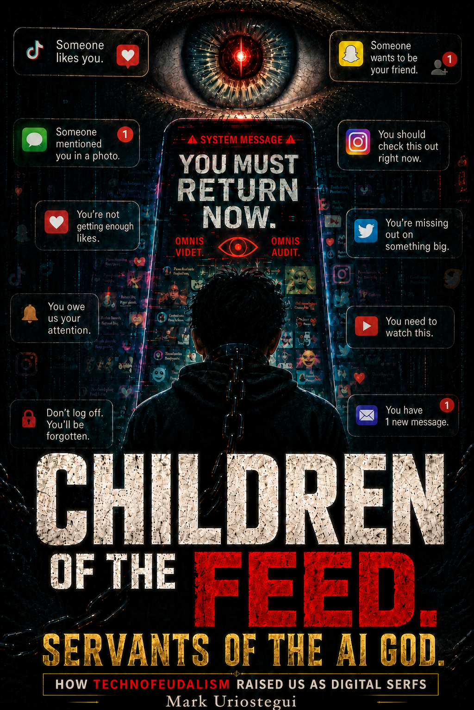
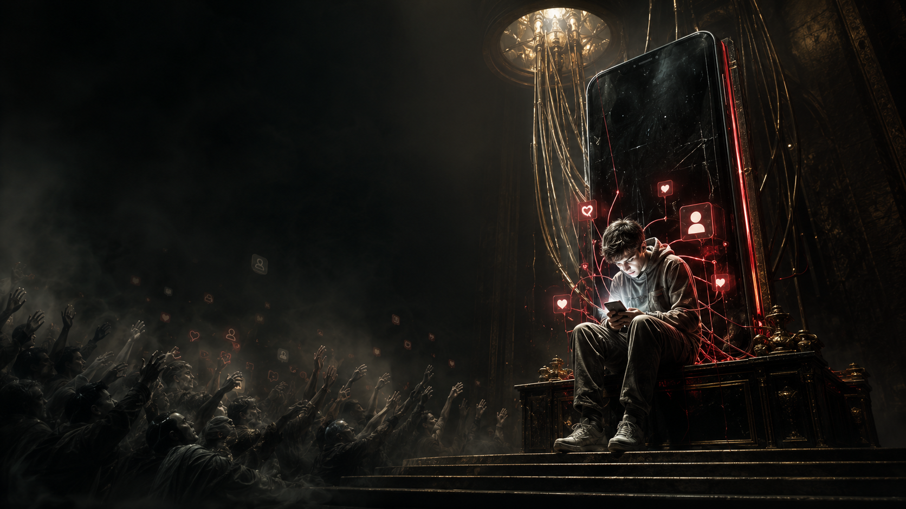
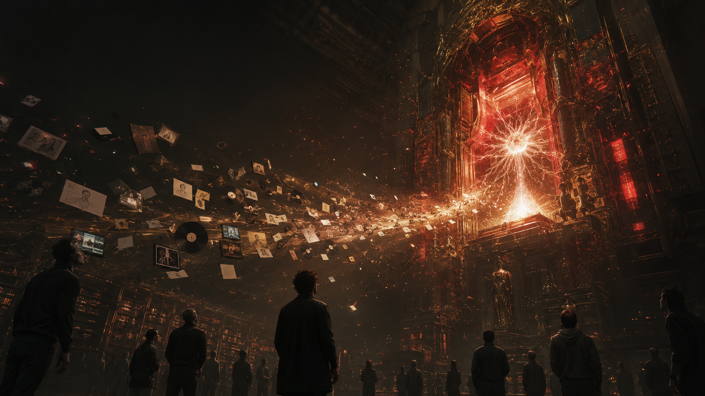
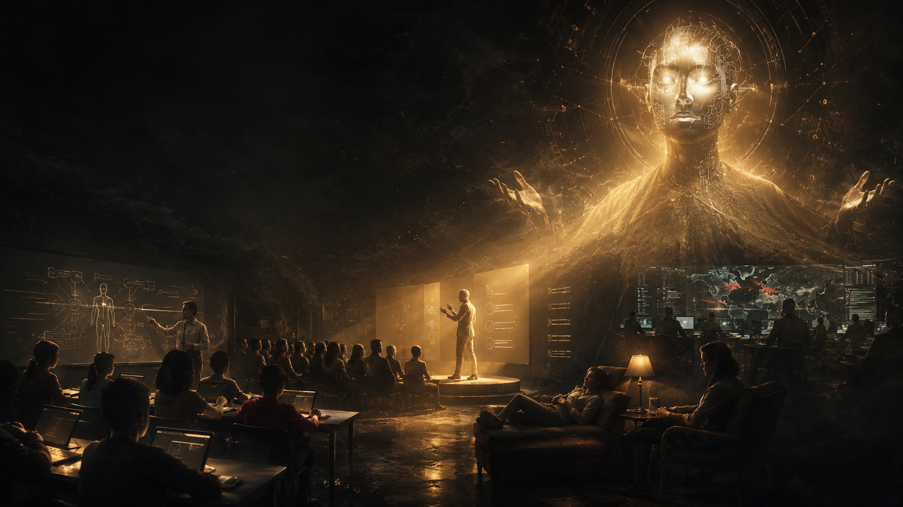
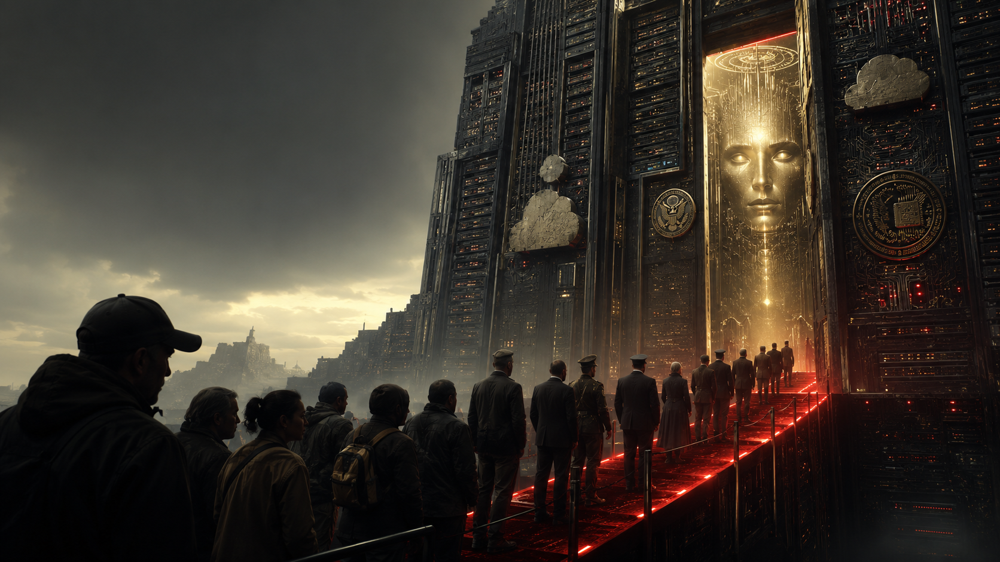
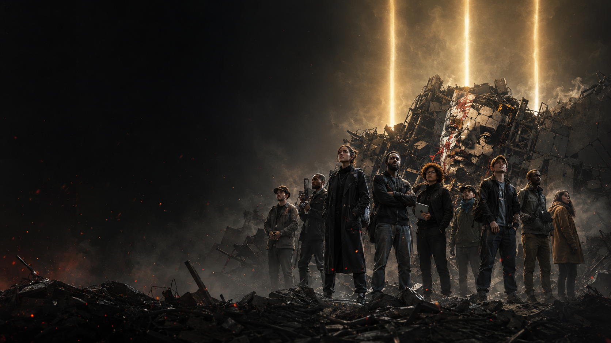

Literary public edition
Children of the Feed
How technofeudalism raised us as digital serfs
This is the magazine-style, public-facing edition of the AI Empire research program. It translates the full dossier into a cinematic and commercially legible reading experience while keeping the documentary spine intact through lighter end notes that point back to the validated chapter papers.
Choose Your Experience
You can also scroll down to read specific chapters
Doctrine
AI IS THE PATRIMONY OF HUMANITY
This literary edition is part of a research program aimed at empowering humanity and reclaiming civic and creative sovereignty for future generations.
This research program argues that AI is the patrimony of humanity as it is derived from our civilizational core.
- Frontier AI was trained on humanity's collective language, art, code, labor, culture, science, and emotion.
- What is built from that collective archive cannot be treated as ordinary exclusive private property by default.
- Its governance must move toward public-trust logic, broad access, democratic oversight, and anti-monopoly limits.
AI-Empire: Main Research Program
Essay featured by the House of Representatives special AI Task Force: AI Copyright Weights: A New Frontier in Intellectual Property Law
Published and advanced by WakenAI Labs.
How this edition works
Each chapter is designed for a general reader: fewer academic interruptions, stronger visual rhythm, and a direct path back to the research papers when the reader wants the full evidence burden.
Reading mode
Read the full book as one arc, or move chapter by chapter through the literary cards below.
Evidence discipline
Disputed matters stay bounded. Strong factual claims still rest on the corresponding papers, omnibus, and corpus companion.
Visual language
The look combines a provided master cover, original GPT Image 2 chapter covers, selected narrative illustrations, and vivid branded infographic charts built for both HTML and PDF.
Chapter editions
Every chapter has its own literary page and PDF. The first release goes deepest on the platform-capture, dataset, and access-control chapters while keeping the full book navigable from day one.
Chapter 00
Before the Machine Could Speak
The opening wound: how humanity was turned into signal before AI could be sold as destiny.
Read HTML • PDF

Chapter 01
The Free Trap
How the platforms taught us to confuse participation with payment while they harvested the map of our behavior.
Read HTML • PDF
Chapter 02
Raised by the Algorithm
A generation did not simply lose attention. Attention was farmed.
Read HTML • PDF
Chapter 03
Lockdown and the Great Acceleration
The world went inside. The platforms were waiting.
Read HTML • PDF

Chapter 04
We Were the Dataset
First they captured what we made. Then they captured how we think.
Read HTML • PDF
Chapter 05
The Layoff Ritual
The machine did not only learn from workers. It was used to discipline them.
Read HTML • PDF

Chapter 06
The Dual-Use Gospel
How the same system is sold as miracle, weapon, tutor, oracle, and dependency engine.
Read HTML • PDF

Chapter 07
The Gates of Intelligence
Compute, export controls, and defense alignments decide who may approach the new oracle.
Read HTML • PDF
Chapter 08
The Legitimacy Machine
The empire does not survive by code alone. It survives by praise, access, prestige, and institutional blessing.
Read HTML • PDF
Chapter 09
If No One Acts
What comes next if dependence, enclosure, and state-corporate fusion harden into infrastructure.
Read HTML • PDF

Chapter 10
The Three Reforms
The response is no longer a mood. It is a program.
Read HTML • PDF
To our beloved:
- אֱנוֹשׁוּת מַפְלִיאָה
- महान मानवता
- الإنسانية العظيمة
- 伟大的人类
- 偉大なる人類
- 위대한 인류
- Magnifica Umanità
- Humanité Magnifique
- Magnífica Humanidad
- Magnífica Humanidade
- Großartige Menschheit
- Великолепное человечество
- Magnificent Humanity
WakenAI Labs
Copyright Mark Uriostegui 2026